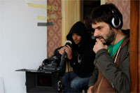

Directed by Razvan Radulescu and Melissa De Raaf; Romania/Belgium/ France/Croatia 2009; 100 min.
Pittsburgh Premier
Live from Bucharest, via Skype, film director Razvan Radulescu will introduce his film!
Moderated by Andreea Deciu Rivitoli, Professor of English at the Carnegie Mellon University.
Screening followed by reception featuring hummus, cheeses, and French baguettes from Allegro Hearth Bakery.
Supported by the Master of Entertainment Industry Management Program at Carnegie Mellon University
"With its long takes, quiet realism and fusion of dark humor and poignancy, First of All, Felicia bears the hallmarks of recent Romanian cinema."- Sheri Linden; The Hollywood Reporter
2010 Exhibited, Festival de Cannes, Cannes
2010 Cineuropa Prize, Estoril Film Festival, Portugal
Felicia visits her parents in Bucharest one time per year, and each time ends in some sort of disaster. This year, as she escapes from her mother’s nagging and father’s sickness, Felicia is desperate to return to the normalcy of her son. Confronted with one problem after another while trying to catch a plane ride home, she struggles to find out firsthand what family is all about.

Razvan Radulescu studied Literature and Opera Directing in Bucharest. He wrote two novels and worked as an art director for magazines. In 1999 he started to write for films, including the award-winning Stuff and Dough (Cristi Puiu), Niki and Flo (Lucian Pintilie), The Paper Will Be Blue and Boogie (Radu Muntean), and the internationally-acclaimed The Death of Mr. Lazarescu (Cristi Puiu). He also worked as a script consultant for Cristian Mungiu’'s 4 Months, 3 Weeks, 2 Days.
Melissa de Raaf currently studies art theory, philosophy and media art at the Hochschule für Gestaltung Karlsruhe, Germany. She is an independent curator of experimental film programs and exhibitions in the Netherlands, Germany and Russia and she cooperates with visual artists, film- and documentary-makers on productions as writer and director. She wrote several scripts (Shelter, directed by Dragomir Sholev; Clean, directed by Sylvie Michel Cassey).